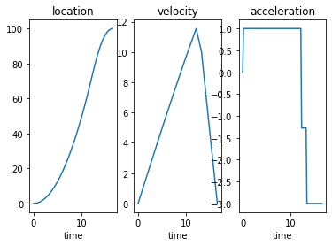

Dynamic Optimization with Pyomo.DAE
Contents
2.7. Dynamic Optimization with Pyomo.DAE¶
Adapted from https://github.com/Pyomo/pyomo/blob/master/examples/dae/car_example.py
import sys
if "google.colab" in sys.modules:
!wget "https://raw.githubusercontent.com/ndcbe/CBE60499/main/notebooks/helper.py"
import helper
#!pip install casadi
helper.install_idaes()
helper.install_ipopt()
2.7.1. Car Example¶
You are a race car driver with a simple goal. Drive distance \(L\) in the minimal amount of time but come to a complete stop at the finish line.
2.7.1.1. Optimal Control Problem Formulation¶
Mathematically, you want to solve the following optimal control problem:
where \(a\) is the acceleration/braking (your control variable) and \(R\) is the drag coefficient (parameter).
2.7.1.2. Scale Time Scale Time¶
Let \(t = \tau \cdot t_f\) where \(\tau \in [0,1]\). Thus \(dt = t_f d\tau\). The optimal control problem becomes:
2.7.1.3. Orthogonal Collocation on Finite Elements: Manual Approach¶
Indices and Sets
Finite elements: \(i \in \mathcal{I} = \{1,2,...,N_{FE}\}\)
Finite elements (except first): \(\mathcal{I} \setminus 1\)
Internal collocation points: \(j,k \in \mathcal{J} = \{1,2,...,N_{C}\}\)
Parameters
Coefficients in collocation/Runge-Kutta formula: \(a_{j,j}\)
Drag coefficient: \(R\)
Race length: \(L\)
Scaled time for each finite element: \(h_i = \frac{1}{N_{FE}}\)
Variables
Position (internal collocation points): \(x_{i,j}\)
Position (beginning of each finite element): \(\bar{x}_{i}\)
Position derivative (internal collocation points): \(\dot{x}_{i,j}\)
Velocity (internal collocation points): \(v_{i,j}\)
Velocity (beginning of each finite element): \(\bar{v}_{i}\)
Velocity derivative (internal collocation points): \(\dot{v}_{i,j}\)
Time (internal collocation points): \(t_{i,j}\)
Time (beginning of each finite element): \(\bar{t}_{i}\)
Acceleration (control degrees of freedom): \(u_i\)
Objective and Constraints
from pyomo.environ import *
import matplotlib.pyplot as plt
from pyomo.dae import *
m2 = ConcreteModel()
# Define model parameters
m2.R = Param(initialize=0.001) # Friction factor
m2.L = Param(initialize=100.0) # Final position
# Define finite elements and collocation points
NFE = 15
NC = 3
m2.I = Set(initialize=RangeSet(1,NFE)) # Finite elements
m2.J = Set(initialize=RangeSet(1,NC)) # Internal collocation points
# Define first order derivative collocation matrix
A = {}
A[1,1] = 0.19681547722366
A[1,2] = 0.39442431473909
A[1,3] = 0.37640306270047
A[2,1] = -0.06553542585020
A[2,2] = 0.29207341166523
A[2,3] = 0.51248582618842
A[3,1] = 0.02377097434822
A[3,2] = -0.04154875212600
A[3,3] = 0.11111111111111
m2.a = Param(m2.J, m2.J, initialize=A)
# Define step for each finite element
m2.h = Param(m2.I,initialize=1/NFE)
# Define objective (final time)
m2.tf = Var(domain=NonNegativeReals)
# Variables for x
m2.x0 = Var(m2.I)
m2.x = Var(m2.I,m2.J)
m2.xdot = Var(m2.I,m2.J)
# Variables for v
m2.v0 = Var(m2.I)
m2.v = Var(m2.I,m2.J)
m2.vdot = Var(m2.I,m2.J)
# Variables for t
m2.t0 = Var(m2.I)
m2.t = Var(m2.I,m2.J)
# Acceleration
m2.u = Var(m2.I, bounds=(-3,1))
### Finite Element Collocation Equations
# position
def FECOLx_(m2,i,j):
return m2.x[i,j] == m2.x0[i] + m2.h[i]*sum(m2.a[k,j]*m2.xdot[i,k] for k in m2.J)
m2.FECOLx = Constraint(m2.I,m2.J,rule=FECOLx_)
# velocity
def FECOLv_(m2,i,j):
return m2.v[i,j] == m2.v0[i] + m2.h[i]*sum(m2.a[k,j]*m2.vdot[i,k] for k in m2.J)
m2.FECOLv = Constraint(m2.I,m2.J,rule=FECOLv_)
# time
def FECOLt_(m2,i,j):
return m2.t[i,j] == m2.t0[i] + m2.h[i]*sum(m2.a[k,j]*m2.tf for k in m2.J)
m2.FECOLt = Constraint(m2.I,m2.J,rule=FECOLt_)
### Continuity Equations
# position
def CONx_(m2,i):
if i == 1:
return Constraint.Skip
else:
return m2.x0[i] == m2.x0[i-1] + m2.h[i-1]*sum(m2.a[k,NC]*m2.xdot[i,k] for k in m2.J)
m2.CONx = Constraint(m2.I, rule=CONx_)
# velocity
def CONv_(m2,i):
if i == 1:
return Constraint.Skip
else:
return m2.v0[i] == m2.v0[i-1] + m2.h[i-1]*sum(m2.a[k,NC]*m2.vdot[i,k] for k in m2.J)
m2.CONv = Constraint(m2.I, rule=CONv_)
# time
def CONt_(m2,i):
if i == 1:
return Constraint.Skip
else:
return m2.t0[i] == m2.t0[i-1] + m2.h[i-1]*sum(m2.a[k,NC]*m2.tf for k in m2.J)
m2.CONt = Constraint(m2.I, rule=CONt_)
### Differential equations
# position
def ODEx_(m2,i,j):
return m2.xdot[i,j] == m2.tf*m2.v[i,j]
m2.ODEx = Constraint(m2.I,m2.J,rule=ODEx_)
# velocity
def ODEv_(m2,i,j):
return m2.vdot[i,j] == m2.tf*(m2.u[i] - m2.R*m2.v[i,j]**2)
m2.ODEv = Constraint(m2.I,m2.J,rule=ODEv_)
### Initial conditions
m2.xIC = Constraint(expr=m2.x0[1] == 0)
m2.vIC = Constraint(expr=m2.v0[1] == 0)
m2.tIC = Constraint(expr=m2.t0[1] == 0)
### Boundary conditions
m2.xBC = Constraint(expr=m2.L == m2.x0[NFE] + m2.h[NFE]*sum(m2.a[k,NC]*m2.xdot[NFE,k] for k in m2.J))
m2.vBC = Constraint(expr=0 == m2.v0[NFE] + m2.h[NFE]*sum(m2.a[k,NC]*m2.vdot[NFE,k] for k in m2.J))
### Set objective
m2.obj = Objective(expr=m2.tf)
solver = SolverFactory('ipopt')
solver.solve(m2,tee=True)
print("final time = %6.2f" %(value(m2.tf)))
Ipopt 3.13.2:
******************************************************************************
This program contains Ipopt, a library for large-scale nonlinear optimization.
Ipopt is released as open source code under the Eclipse Public License (EPL).
For more information visit http://projects.coin-or.org/Ipopt
******************************************************************************
This is Ipopt version 3.13.2, running with linear solver ma27.
Number of nonzeros in equality constraint Jacobian...: 1093
Number of nonzeros in inequality constraint Jacobian.: 0
Number of nonzeros in Lagrangian Hessian.............: 105
Total number of variables............................: 286
variables with only lower bounds: 1
variables with lower and upper bounds: 15
variables with only upper bounds: 0
Total number of equality constraints.................: 272
Total number of inequality constraints...............: 0
inequality constraints with only lower bounds: 0
inequality constraints with lower and upper bounds: 0
inequality constraints with only upper bounds: 0
iter objective inf_pr inf_du lg(mu) ||d|| lg(rg) alpha_du alpha_pr ls
0 9.9999900e-03 1.00e+02 0.00e+00 -1.0 0.00e+00 - 0.00e+00 0.00e+00 0
1r 9.9999900e-03 1.00e+02 9.99e+02 2.0 0.00e+00 - 0.00e+00 1.05e-07R 2
2r 3.0578540e+00 9.99e+01 9.31e+02 2.0 4.49e+01 - 1.35e-01 6.80e-02f 2
3r 2.2146807e+00 9.91e+01 5.68e+02 1.3 2.16e+00 - 1.00e+00 3.91e-01f 1
4r 2.0626784e+00 9.87e+01 4.21e+02 0.6 2.94e+00 - 6.36e-01 2.59e-01f 1
5r 2.7501672e+00 9.77e+01 2.42e+02 0.6 8.74e+00 - 5.56e-01 4.24e-01f 1
6r 5.8696920e+00 9.43e+01 1.91e+02 -0.1 8.62e+00 - 4.13e-01 7.57e-01f 1
7r 8.6536528e+00 8.80e+01 1.65e+02 -0.1 1.29e+01 - 2.98e-01 7.27e-01f 1
8r 9.0137628e+00 8.55e+01 1.09e+02 -0.1 3.77e+00 - 5.42e-01 1.00e+00f 1
9 9.4134225e+00 8.42e+01 9.84e-01 -1.0 1.13e+02 - 3.63e-01 1.56e-02h 7
iter objective inf_pr inf_du lg(mu) ||d|| lg(rg) alpha_du alpha_pr ls
10 9.7719760e+00 8.29e+01 9.61e-01 -1.0 1.13e+02 - 6.94e-01 1.56e-02h 7
11 1.0069154e+01 8.16e+01 1.10e+00 -1.0 1.20e+02 - 6.26e-01 1.52e-02h 7
12 1.0350049e+01 8.04e+01 1.27e+00 -1.0 1.24e+02 - 1.00e+00 1.56e-02h 7
13 1.0613260e+01 7.91e+01 1.29e+00 -1.0 1.25e+02 - 6.03e-01 1.56e-02h 7
14 1.0858870e+01 7.79e+01 1.31e+00 -1.0 1.25e+02 - 1.00e+00 1.56e-02h 7
15 1.1089714e+01 7.66e+01 1.31e+00 -1.0 1.23e+02 - 7.24e-01 1.56e-02h 7
16 1.1306240e+01 7.55e+01 1.31e+00 -1.0 1.24e+02 - 1.00e+00 1.56e-02h 7
17 1.1714847e+01 7.31e+01 1.28e+00 -1.0 1.22e+02 - 8.51e-01 3.12e-02h 6
18 1.2077191e+01 7.08e+01 1.24e+00 -1.0 1.23e+02 - 1.00e+00 3.12e-02h 6
19 2.2531170e+01 7.10e+01 8.96e-01 -1.0 1.19e+02 - 1.00e+00 1.00e+00w 1
iter objective inf_pr inf_du lg(mu) ||d|| lg(rg) alpha_du alpha_pr ls
20 1.7706786e+01 4.49e+00 1.75e-01 -1.0 2.28e+01 - 1.00e+00 1.00e+00w 1
21 1.7349863e+01 1.01e-01 7.40e-04 -1.0 8.28e+00 - 1.00e+00 1.00e+00h 1
22 1.6478946e+01 1.06e+00 3.16e-02 -2.5 1.68e+01 - 8.21e-01 1.00e+00h 1
23 1.6333670e+01 1.11e-01 9.02e-04 -2.5 1.27e+01 - 9.80e-01 1.00e+00h 1
24 1.6324255e+01 5.10e-04 4.40e-06 -2.5 6.64e-01 - 1.00e+00 1.00e+00h 1
25 1.6289923e+01 3.05e-03 1.05e-05 -3.8 1.03e+00 - 1.00e+00 1.00e+00h 1
26 1.6289753e+01 1.16e-07 1.47e-09 -3.8 5.97e-03 - 1.00e+00 1.00e+00h 1
27 1.6287822e+01 9.84e-06 3.34e-08 -5.7 5.95e-02 - 1.00e+00 1.00e+00f 1
28 1.6287798e+01 1.59e-09 5.42e-12 -8.6 7.53e-04 - 1.00e+00 1.00e+00h 1
Number of Iterations....: 28
(scaled) (unscaled)
Objective...............: 1.6287797665173553e+01 1.6287797665173553e+01
Dual infeasibility......: 5.4235099871471539e-12 5.4235099871471539e-12
Constraint violation....: 1.5949126463965513e-09 1.5949126463965513e-09
Complementarity.........: 2.5440456242856559e-09 2.5440456242856559e-09
Overall NLP error.......: 2.5440456242856559e-09 2.5440456242856559e-09
Number of objective function evaluations = 106
Number of objective gradient evaluations = 23
Number of equality constraint evaluations = 106
Number of inequality constraint evaluations = 0
Number of equality constraint Jacobian evaluations = 30
Number of inequality constraint Jacobian evaluations = 0
Number of Lagrangian Hessian evaluations = 28
Total CPU secs in IPOPT (w/o function evaluations) = 0.014
Total CPU secs in NLP function evaluations = 0.001
EXIT: Optimal Solution Found.
final time = 16.29
2.7.1.4. Orthogonal Collocation on Finite Elements: Pyomo.dae¶
2.7.1.4.1. Declare Model¶
m = ConcreteModel()
m.R = Param(initialize=0.001) # Friction factor
m.L = Param(initialize=100.0) # Final position
m.tau = ContinuousSet(bounds=(0,1)) # Unscaled time
m.time = Var(m.tau) # Scaled time
m.tf = Var()
m.x = Var(m.tau,bounds=(0,m.L+50))
m.v = Var(m.tau,bounds=(0,None))
m.u = Var(m.tau, bounds=(-3.0,1.0),initialize=0)
m.dtime = DerivativeVar(m.time)
m.dx = DerivativeVar(m.x)
m.dv = DerivativeVar(m.v)
m.obj = Objective(expr=m.tf)
def _ode1(m,i):
if i == 0 :
return Constraint.Skip
return m.dx[i] == m.tf * m.v[i]
m.ode1 = Constraint(m.tau, rule=_ode1)
def _ode2(m,i):
if i == 0 :
return Constraint.Skip
return m.dv[i] == m.tf*(m.u[i] - m.R*m.v[i]**2)
m.ode2 = Constraint(m.tau, rule=_ode2)
def _ode3(m,i):
if i == 0:
return Constraint.Skip
return m.dtime[i] == m.tf
m.ode3 = Constraint(m.tau, rule=_ode3)
def _init(m):
yield m.x[0] == 0
yield m.x[1] == m.L
yield m.v[0] == 0
yield m.v[1] == 0
yield m.time[0] == 0
m.initcon = ConstraintList(rule=_init)
2.7.1.4.2. Discretize/Transcribe and Solve¶
#discretizer = TransformationFactory('dae.finite_difference')
#discretizer.apply_to(m,nfe=15,scheme='BACKWARD')
discretizer = TransformationFactory('dae.collocation')
discretizer.apply_to(m,nfe=15,scheme='LAGRANGE-RADAU',ncp=3)
#discretizer.apply_to(m,nfe=15,scheme='LAGRANGE-LEGENDRE',ncp=3)
# force piecewise constant controls (acceleration) over each finite element
m = discretizer.reduce_collocation_points(m,var=m.u,ncp=1,contset=m.tau)
solver = SolverFactory('ipopt')
solver.solve(m,tee=True)
print("final time = %6.2f" %(value(m.tf)))
Ipopt 3.13.2:
******************************************************************************
This program contains Ipopt, a library for large-scale nonlinear optimization.
Ipopt is released as open source code under the Eclipse Public License (EPL).
For more information visit http://projects.coin-or.org/Ipopt
******************************************************************************
This is Ipopt version 3.13.2, running with linear solver ma27.
Number of nonzeros in equality constraint Jacobian...: 1145
Number of nonzeros in inequality constraint Jacobian.: 0
Number of nonzeros in Lagrangian Hessian.............: 135
Total number of variables............................: 319
variables with only lower bounds: 46
variables with lower and upper bounds: 91
variables with only upper bounds: 0
Total number of equality constraints.................: 305
Total number of inequality constraints...............: 0
inequality constraints with only lower bounds: 0
inequality constraints with lower and upper bounds: 0
inequality constraints with only upper bounds: 0
iter objective inf_pr inf_du lg(mu) ||d|| lg(rg) alpha_du alpha_pr ls
0 0.0000000e+00 1.00e+02 1.00e+00 -1.0 0.00e+00 - 0.00e+00 0.00e+00 0
1 3.6882930e+01 9.96e+01 6.45e+02 -1.0 1.00e+04 - 9.91e-05 3.69e-03h 9
2 3.9470634e+01 1.07e+01 1.19e+03 -1.0 1.53e+02 0.0 2.42e-03 9.90e-01f 1
3 3.8532247e+01 2.51e-01 2.03e+02 -1.0 2.54e+00 -0.5 9.65e-01 9.90e-01h 1
4 3.8410228e+01 7.80e-04 3.81e-01 -1.0 1.22e-01 -1.0 1.00e+00 1.00e+00h 1
5 1.1753203e+01 1.06e+02 6.26e+03 -2.5 2.54e+03 - 6.71e-02 1.02e-01f 1
6 1.4082983e+01 7.02e+01 4.81e+04 -2.5 1.08e+02 - 7.78e-02 3.38e-01h 1
7 1.5801574e+01 3.64e+01 8.78e+04 -2.5 8.55e+01 - 8.81e-02 4.94e-01h 1
8 1.6404903e+01 1.44e+01 8.17e+04 -2.5 7.55e+01 - 2.84e-01 6.29e-01h 1
9 1.6434448e+01 6.13e+00 2.33e+04 -2.5 4.53e+01 - 6.87e-01 5.78e-01h 1
iter objective inf_pr inf_du lg(mu) ||d|| lg(rg) alpha_du alpha_pr ls
10 1.6664583e+01 1.13e-01 2.73e+03 -2.5 7.97e+00 - 9.14e-01 1.00e+00h 1
11 1.6635032e+01 8.41e-03 1.02e-05 -2.5 4.85e+00 - 1.00e+00 1.00e+00h 1
12 1.6528482e+01 1.77e-02 3.21e-04 -3.8 1.54e+00 - 1.00e+00 1.00e+00h 1
13 1.6526502e+01 7.15e-06 5.43e-08 -3.8 2.76e-02 - 1.00e+00 1.00e+00h 1
14 1.6520275e+01 6.32e-05 1.05e-06 -5.7 9.58e-02 - 1.00e+00 1.00e+00h 1
15 1.6520269e+01 7.57e-11 1.88e-11 -5.7 1.33e-04 - 1.00e+00 1.00e+00h 1
16 1.6520192e+01 9.76e-09 1.62e-10 -8.6 1.19e-03 - 1.00e+00 1.00e+00f 1
Number of Iterations....: 16
(scaled) (unscaled)
Objective...............: 1.6520191521080921e+01 1.6520191521080921e+01
Dual infeasibility......: 1.6218795328535750e-10 1.6218795328535750e-10
Constraint violation....: 9.7603845006233314e-09 9.7603845006233314e-09
Complementarity.........: 2.5852537039546602e-09 2.5852537039546602e-09
Overall NLP error.......: 9.7603845006233314e-09 9.7603845006233314e-09
Number of objective function evaluations = 27
Number of objective gradient evaluations = 17
Number of equality constraint evaluations = 27
Number of inequality constraint evaluations = 0
Number of equality constraint Jacobian evaluations = 17
Number of inequality constraint Jacobian evaluations = 0
Number of Lagrangian Hessian evaluations = 16
Total CPU secs in IPOPT (w/o function evaluations) = 0.009
Total CPU secs in NLP function evaluations = 0.001
EXIT: Optimal Solution Found.
final time = 16.52
2.7.1.4.3. Plot Results¶
x = []
v = []
u = []
time=[]
for i in m.tau:
time.append(value(m.time[i]))
x.append(value(m.x[i]))
v.append(value(m.v[i]))
u.append(value(m.u[i]))
plt.subplot(131)
plt.plot(time,x,label='x')
plt.title('location')
plt.xlabel('time')
plt.subplot(132)
plt.plot(time,v,label='v')
plt.xlabel('time')
plt.title('velocity')
plt.subplot(133)
plt.plot(time,u,label='a')
plt.xlabel('time')
plt.title('acceleration')
plt.show()
